Assignment 1. Welcome to C++¶
Here it is – the first programming assignment of the course! This assignment is designed to get you comfortable designing and building software in C++. It consists of three problems that collectively play around with control structures, string processing, recursion, and problem decomposition in C++. By the time you’ve completed this assignment, you’ll be a lot more comfortable working in C++ and will be ready to start building larger projects.
This assignment consists of three parts, of which two require writing code. This will be a lot to do if you start this assignment the night before it’s due, but if you make slow and steady progress on this assignment each day you should be in great shape. Here’s our recommended timetable:
Complete Debugger Warmups the day this assignment is released. You don’t need to write any code for it; it’s just about working the debugger, something you practiced in Assignment Zero.
Complete Fire within three days of this assignment going out.
Complete Only Connect within seven days of this assignment being released.
The last part of this assignment will involve writing recursive code, which can take some time to adjust to. That’s perfectly normal! We recommend leaving some extra buffer time there in case you need to ponder and tinker with that one.
Starter Files¶
We provide a ZIP of the starter project. Download the zip, extract the files, and open the project in VS Code.
Part One: Debugger Warmups¶
Before diving into the rest of this assignment, we’d like you to work through two small debugger exercises to give yourself more familiarity with how to set breakpoints, read the value of local variables, and walk up and down the call stack.
Milestone One: Call Stack Storytelling¶
The starter files for Assignment 1 include a piece of code that will generate a random story in which you’re the protagonist. By “random story,” we mean “no one else in the course is going to have the same story as you!” However, that story will live purely inside of a collection of local variables inside of a program, and the only way to read it will be to use the debugger.
Open the file DebuggerWarmups.cpp. At the top of the file, you’ll see the following code:
/* TODO: Fill this in with your name before reading the story. Otherwise
* you'll get the wrong story!
*/
const string MyName = "(Your Name Here)";
Edit the string MyName so that it holds your full name (feel free to use a nickname if you’d like). Right below that constant, you’ll see the following:
void theEnd() {
string text = "THE END!";
/* Set a breakpoint here. */
(void) text;
}
Set a breakpoint at the indicated position. Then, run the provided program with the debugger enabled (you saw how to do this in Assignment 0). Choose “Storytelling” from the top-level menu in the running program and click the button at the bottom of the window. This will call a series of functions that eventually will terminate at the function theEnd on the line where you set the breakpoint. The program should then pause at the place where the breakpoint occurs.
You are now ready to start reading the story we generated for you! You can see the very last part of the story, "THE END!", as the value of the local variable text. To see the earlier parts of the story, you’ll need to walk down the call stack and look at the local variables window. Each function that was called will put a part of the story into a local variable named text (remember that different functions can have variables with the same name, and those variables are all independent of one another). As you walk down the call stack, you’ll notice that you’ll be seeing the story told in reverse order, with the later parts of the story higher in the call stack and the earlier parts of the story lower in the call stack. The story itself is actually told in the correct order, but since more-recently-called functions show up higher in the call stack than less-recently-called functions, you’ll see the end of the story at the top of the call stack and the start of the story toward the bottom.
Walk down the call stack until you find the function tellStory, then walk upwards from there to read your story. To show your section leader that you’ve read the story, you will write it down for them in the file comments at the top of DebuggerWarmups.cpp. To do so, scroll all the way up to the top of DebuggerWarmups.cpp. You will see a comment there, which may be collapsed by default. If it’s collapsed, go to Line 1 of the program and click the small triangle next to it to expand it out. Then, write the story you found as your answer to Q1. To recap, here’s what you need to do:
Milestone One Requirements
Edit the constant
MyNameat the top ofDebuggerWarmups.cppwith a string containing your name. Don’t skip this step! If you forget to do this, you’ll get the wrong story!Set a breakpoint at the indicated line of the function
theEnd.Run the provided starter files in debug mode. Choose the “Storytelling” option from the top-level menu in the program and click the “Go!” button. This will trigger the debugger at the breakpoint you set.
Walk down the call stack until you find the stack frame for
tellStory.Walk up the call stack, reading the values of the variables named
text, to see your story.Write down your story as the answer to Q1 in the file comments at the top of
DebuggerWarmups.cpp.
Some notes on this problem:
Once you’ve completed this exercise, do not change the value of
MyName. We use your name to determine which story to tell, and if you change it, the story you’ll have written down will not match the story the program generates!If the debugger doesn’t engage when you click the “Go!” button, it could mean that you forgot to set the breakpoint in the right place. It could also mean that you ran the program from VS Code with the big green “Run” button, which doesn’t turn on the debugger, rather than running the program with the debugger engaged. Fortunately, this is very easy to address! Check the instructions from Assignment 0 to see how to set a breakpoint or run the program with the debugger on.
Aside from changing
MyNameand writing your answer in the file comments, you should not modify any of the code inDebuggerWarmups.cpp.We apologize if you find your story underwhelming. :-)
Milestone Two: Stack Overflows¶
Whenever a program calls a function, the computer sets aside memory called a stack frame for that function call in a region called the call stack. Whenever a function is called, it creates a new stack frame, and whenever a function returns, the space for that stack frame is recycled.
As you saw in lecture on Friday, whenever a recursive function makes a recursive call, it creates a new stack frame, which in turn might make more stack frames, which in turn might make even more stack frames, etc. For example, when we computed factorial(5), we ended up creating a net total of six stack frames: one for each of factorial(5), factorial(4), factorial(3), factorial(2), factorial(1), and factorial(0). They were automatically cleaned up as soon as those functions returned.
But what would happen if you called factorial on a very large number, say, factorial(7897987)? This would create a lot of stack frames; specifically, it will make 7,897,988 of them (one for factorial(7987987), one for factorial(7987986), …, and one for factorial(0)). This is such a large number of stack frames that the call stack might not have space to store them (typically, the call stack can hold only a thousand or so stack frames at once). When too many stack frames need to be created at the same time, the result is a stack overflow and the program will crash.
In the case of factorial(7987987), a stack overflow occurs because we need a large but finite number of stack frames. In other cases, stack overflows arise due to programming errors. For example, consider the following (buggy!) implementation of the sumOfDigitsOf function from Lecture 2:
/* This code is incorrect! Do not use it as a reference. */
int sumOfDigitsOf(int n) {
return sumOfDigitsOf(n / 10) + (n % 10);
}
Let’s imagine that you try calling sumOfDigitsOf(137). The initial stack frame looks like this:
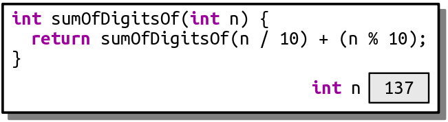
This stack frame calls sumOfDigitsOf(n / 10). The value of n / 10 is 13 because of how C++ divides integers. Therefore, we fire off a call to sumOfDigitsOf(13), as shown here:
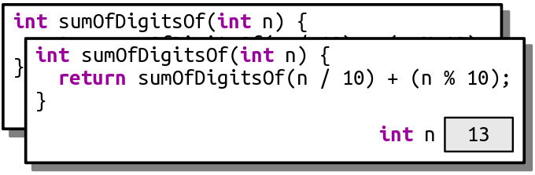
This now calls sumOfDigitsOf(n / 10), which is call to sumOfDigitsOf(1):
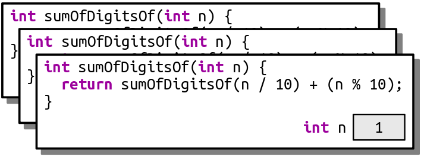
This now calls sumOfDigitsOfn / 10), which ends up calling sumOfDigitsOf(0):
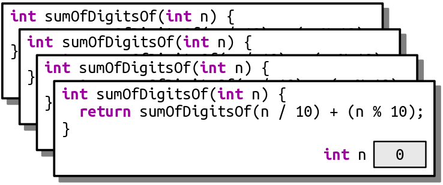
This now calls sumOfDigitsOf(n / 10), which ends up calling sumOfDigitsOf(0) again, as shown here:
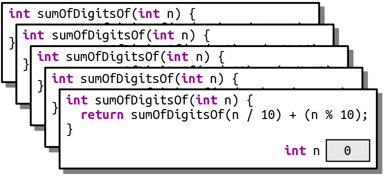
This call makes yet another call to sumOfDigitsOf(0) for the same reason:
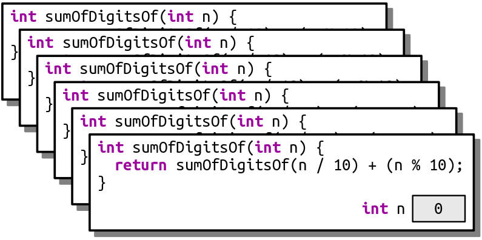
And that call makes yet another call to sumOfDigitsOf(0):
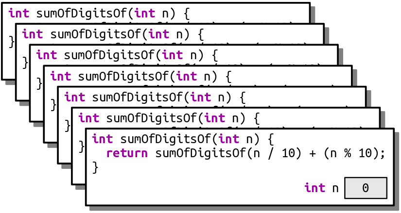
As you can see, this recursion is off to the races. It’s like an infinite loop, but with function calls. This code will trigger a stack overflow because at some point it will exhaust the memory in the call stack.
Another place you’ll see stack overflows is when you have a recursive function that, for some reason, misses or skips over its base case. For example, let’s suppose you want to write a function isEven that takes as input a number n and returns whether it’s an even number. You note that 0 is even (trust us, it is; take Stanford CS103 for details!) and, more generally, a number n is even precisely if n – 2 is even. For example, 2 is even because 2 – 2 = 0 is even, 4 is even because 4 – 2 = 2 is even, and 6 is even because 6 – 2 = 4 is even, etc. Based on this (correct) insight, you decide to write this (incorrect) recursive function:
/* This code is incorrect! Do not use it as a reference. */
bool isEven(int n) {
if (n == 0) {
return true;
} else {
return isEven(n - 2);
}
}
Now, what happens if you call isEven(5)? This initially looks like this:
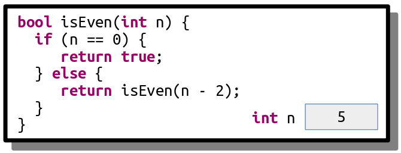
This call will call isEven(3), as shown here:
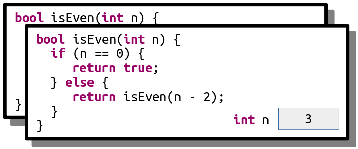
And that call then calls isEven(1):
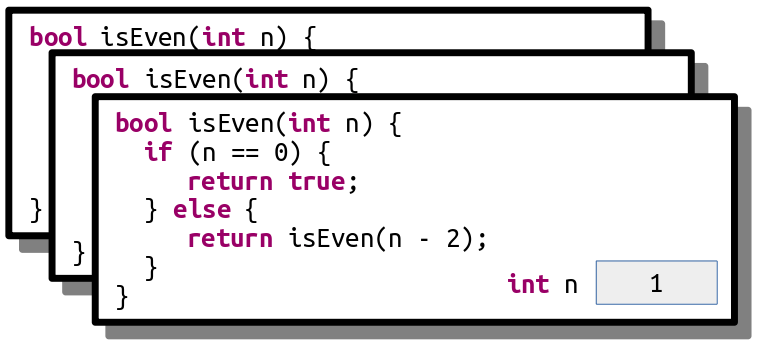
And here’s where things go wrong. This function now calls isEven(-1), skipping over the base case:
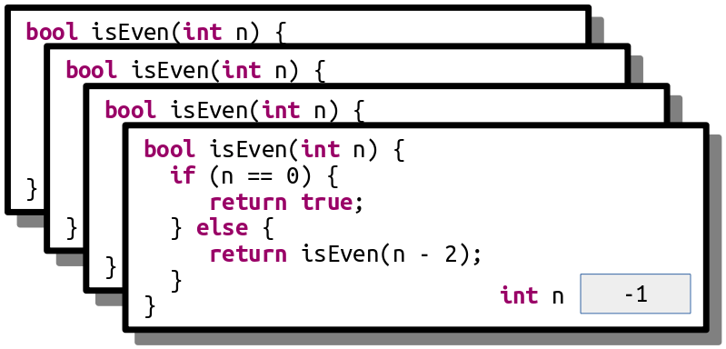
This call then calls isEven(-3):
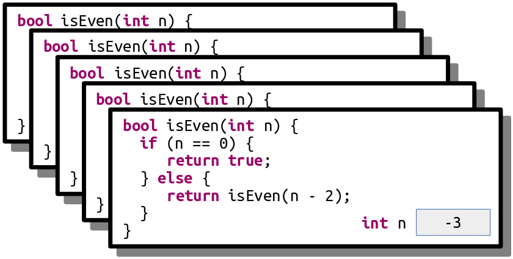
And we’re off to the Stack Overflow Races – n will keep getting more negative until we’re out of space.
Step One: See a Stack Overflow¶
There are two different ways that you can run a C++ program through VS Code. The first is to run the program normally, which you can do by clicking the right-click menu “Run in Terminal” option. The second is to run the program with the debugger engaged, which you saw how to do in Assignment 0. The behavior of a program that triggers a stack overflow is different based on whether it’s running with the debugger on or off.
To see this, run the provided starter files without the debugger engaged (that is, with the “Run in Terminal” option). Click the “Stack Overflows” option. You’ll see a message and a button at the bottom of the window that will trigger a stack overflow. Click that button and watch what happens. This is what it looks like when a C++ program crashes. What you see will depend on what operating system you’re using. Write down a description of what you saw happen as Q2 in the file comments of DebuggerWarmups. Now, if you see similar behavior in the future, you’ll be able to say “oh yeah, that probably means my program crashed.”
Next, run the program again, but this time with the debugger turned on. Follow the same steps as above to trigger the stack overflow. This time, you should see the debugger pop up and point at a line in the program where the stack overflow occurred. You’ll also see the call stack, which should be filled with lots and lots of calls to the same function. Now that you’ve got the debugger engaged, you can investigate which function triggered the stack overflow and, ideally, to work out what went wrong. You don’t need to write anything down just yet. For now, hit the red “stop” button to close the program.
Going forward, as you’re writing your first recursive functions, keep what you just saw in mind. If you see something that looks like your program crashed with a stack overflow, turn on the debugger and run it again. You’ll then be taken to the exact spot where the stack overflow occurred, and from there you can walk the call stack to see what’s up. Do you see multiple calls to a recursive function with the same parameters? Or a sequence of negative values getting more negative? That might indicate what’s going on.
Step Two: Trace a Stack Overflow¶
In this part of the assignment, we’ve included a recursive function that looks like this:
void triggerStackOverflow(int value) {
triggerStackOverflow(kGotoTable[value]);
}
Here, kGotoTable is a giant (1024-element) array of the numbers 0 through 1023 that have been randomly permuted. This function looks up its argument in the table, then makes a recursive call using that argument. As a result, the series of recursive calls made is extremely hard to predict by hand, and since the recursion never stops (do you see why?) this code will always trigger a stack overflow.
Our starter code includes the option to call this function passing in some initial value that depends on the MyName constant you specified in the first part of the assignment. Run the provided starter code in debug mode and trigger the stack overflow. You’ll get an error message that depends on your OS (it could be something like “segmentation fault,” “access violation,” “stack overflow,” etc.) and the debugger should pop up. Walk up and down the call stack and inspect the sequence of values passed in as parameters to triggerStackOverflow.
We’ve specifically crafted the numbers in kGotoTable so that the calls in triggerStackOverflow form a cycle. Your task in this part of the assignment is to tell us the sequence of the numbers in the cycle. For example, if the sequence was
triggerStackOverflow(137)callstriggerStackOverflow(106), which callstriggerStackOverflow(271), which callstriggerStackOverflow(137), which callstriggerStackOverflow(106), which callstriggerStackOverflow(271), which callstriggerStackOverflow(137), which callstriggerStackOverflow(106), which calls
Then you would give us the cycle 137, 106, 271, 137.
Once you’ve worked out the sequence of values, write them down as the answer to Q3 in the file comments of DebuggerWarmups.cpp.
Below is a quick summary of the deliverables for this part of the assignment. See the above sections for more details.
Milеstone Two Requirements
Run the provided program without the debugger engaged and trigger a stack overflow using the menu. In Q2 of the file comments of
DebuggerWarmups.cpp, describe what you saw happen when the stack overflow occurred. (We’re looking for a 2 - 3 sentence answer.)Run the provided program a second time with the debugger engaged and trigger a stack overflow using the menu. Walk up and down the call stack in the debugger, inspecting the arguments to the recursive call, to determine what the cycle of recursive calls is. Then, in Q3 of the file comments of
DebuggerWarmups.cpp, write down the cycle of numbers you found.
Some notes on this part of the assignment:
The topmost entry on the call stack might be corrupted and either not show a value or show the wrong number. Don’t worry if that’s the case – just move down an entry in the stack.
Remember that if function A calls function B, then function B will appear higher on the call stack than function A because function B was called more recently than function A. Make sure you don’t report the cycle in reverse order!
When you run the program in Debug mode, VS Code will switch to “Run and Debug” panel, which has a bunch of windows and side panels to view information about the running program. That’s great when you’re debugging, and not so great when you’re just trying to write code. You can switch back to the regular code-writing view by clicking the “Explorer” button in the left side pane.
Aside from writing your answers in the file comments, you shouldn’t need to edit any code in the course of solving this problem.
Part Two: Fire¶
(This problem is based on an article by Fabien Sanglard)
In this problem, you’ll write a simulation of fire and flames that looks surprisingly realistic. It’s all the more impressive when you realize just how little code is required to make it work. As a sneak peek, here’s what it looks like:
Here’s how the fire simulation works. We will represent the image as a Grid<int>, basically, a 2D grid of integers. We’ll use the following coordinate system: the top row of the grid is row 0, and the leftmost column is column 0. Rows increase from top to bottom, and columns increase from left to right.
Each grid cell holds an int that represents the temperature at the given point. The coolest temperature is 0, meaning “no fire at all,” with larger and larger numbers indicating hotter and hotter temperatures. At the beginning of the simulation, the temperature of each cell is 0, except for the bottom row, where it’s set to some nonzero “hot” value. We provide code to draw the fire that works by mapping each of these temperature values to a color so that hot cells appear white, cool cells appear red, and cold cells appear black. As a result, you’ll just be working with temperatures; we’ll handle the color logic.
At each step in the fire simulation, to simulate how hot air rises, you will copy the value of each grid cell (except cells in the top row) into some cell in the row above it. In particular, you will copy each cell’s value into one of the three cells that border it from above (directly above, diagonally above and to the left, or diagonally above and to the right). Those cells are shown here:
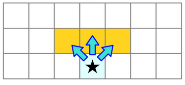
There should be an equal chance of the cell’s value being copied into these three cells. That is, there should be a \(\frac{1}{3}\) chance of the value being copied diagonally up and to the left, a \(\frac{1}{3}\) chance of the value being copied directly upward, and a \(\frac{1}{3}\) chance of the value being copied diagonally up and to the right. Similarly, if you have a cell on the border of the world that has only two cells that border it from above, each of those cells should have a \(\frac{1}{2}\) chance of being selected. And in the rare case where a cell only has one cell bordering it from above, which can only happen in very narrow worlds, that cell’s value should always be copied to the cell directly above it.
As hot air rises from a fire, it cools down. To simulate this effect, with probability \(\frac{2}{3}\), the temperature of the copied cell should be decreased by one. (If the cell has temperature zero, it doesn’t cool down any further.)
Putting it all together, here’s the update procedure:
Scan across the grid from the top to the bottom, starting in the row just below the top row, proceeding left to right across each row.
For each grid cell, pick one of the three cells above it randomly, with each cell having an equal chance of being chosen, and copy the cell there.
With \(\frac{2}{3}\) chance, decrease the temperature of the copy by one, assuming its temperature isn’t already zero.
Surprisingly, that’s all that’s involved in making this work!
Write a function
void updateFire(Grid<int>& fire);
that takes as input the current state of the fire simulation, then updates the grid by advancing the simulation forward one step using the rules described above.
This function works with the Grid<int> type, which we haven’t encountered in lecture. This is a type representing a fixed-size, two-dimensional grid of integers. You can access and manipulate the individual cells using statements like these:
fire[row][col] += 137;
if (fire[row][col] == 0) { ... }
Row and column indices start at zero, and row 0, column 0 is in the upper-left corner of the screen. The rows increase from top to bottom and columns increase from left to right. Make sure not to read or write to a grid in an out-of-bounds location. Doing so will cause the program to crash with an error message.
For more information about the Grid type, read over the Stanford C++ Library Documentation. In particular, we recommend looking at the following:
How do you determine how many rows or how many columns are in the
Grid?How do you determine if a particular
(row, col)position is inside theGrid?
There are functions that do each of these tasks, and you’ll likely need to make use of them in the course of solving this problem.
To summarize, here’s what you need to do.
Fire Requirements
Implement the
updateFirefunction inFire.cpp.Check that your implementation is correct by clicking the “Run Tests” button and checking whether the tests for
updateFireare passing. If so, great! Move on to the next section. If not, go back and fix any bugs you might have.(Optional) Run the provided demo program to see your program in action! Isn’t that something?
Some notes on this problem:
All C++ programs begin inside the
main()function, and we’ve already written this function for you in one of the starter files. You just need to implementupdateFireand are not responsible for writingmain(). (In fact, if you did try to write your ownmain()function here, you’d get an error because there would be two different versions ofmain()and C++ wouldn’t know which one to pick!)You may want to consult the Stanford C++ Library Documentation for information about how to generate random numbers in C++. In particular, look at the
randomIntegerandrandomChancefunctions from therandom.hheader file.Feel free to add helper functions if you’d like. More generally, across all assignments, loop for opportunities to decompose complex problems into smaller pieces.
Unlike Python, but like Java, in C++ if you divide one
intvalue by another, the result will always be rounded toward zero. For example, this code prints 0, not 0.6:int numerator = 3; int denominator = 5; cout << (numerator / denominator) << endl; // Prints 0, not 0.6
This may be relevant when you’re determining whether to cool down one of the cells in the grid. Consult Chapter 1.7 of the textbook to see how to divide two integers without rounding down.
Temperature values will never be negative, but they may be equal to zero.
The
fireparameter toupdateFireis passed by reference (that’s what the&after the type name means). For more on reference parameters, read Chapter 2.5 of the textbook.Our testing framework is very sensitive to incorrect choices of probabilities. So, for example, don’t use 67% as an approximation for \(\frac{2}{3}\).
All cells should be copied upward, even cells whose temperature is zero.
We do not recommend using recursion here. This one is a lot easier to solve iteratively. Check Chapter 1.8 of the textbook for more information about the syntax of
forloops in C++.Our provided test cases here will help you check whether you’re properly copying cells upward, shifting them around randomly, and cooling them down with the right probabilities. You may, however, want to add some of your own test cases.
Part Three: Only Connect¶
The last round of the British quiz show Only Connect consists of puzzles of the following form: can you identify these movie titles, given that all characters except consonants have been deleted?
BTYNDTHBST MN CTCHMFYCN SRSMN
The first is “Beauty and the Beast,” the second is “Moana,” the third is “Catch Me If You Can,” and we’ll leave the last one as a mystery for you to work out if you’re so inclined.
To form a puzzle string like this, you simply delete all characters from the original word or phrase except for consonants, then convert the remaining letters to ALL-CAPS.
Your task is to write a recursive function
string onlyConnectize(string phrase);
that takes as input a string, then transforms it into an Only Connect puzzle. For example:
onlyConnectize("Elena Kagan")returns"LNKGN",onlyConnectize("Antonin Scalia")returns"NTNNSCL",onlyConnectize("EE 364A")returns"",onlyConnectize("For sale: baby shoes, never worn.")returns"FRSLBBYSHSNVRWRN",onlyConnectize("I'm the bad guy. (Duh!)")returns"MTHBDGYDH", andonlyConnectize("Annie Mae, My Sea Anemone Enemy!")returns"NNMMYSNMNNMY".
Notice that the letter Y isn’t removed from these strings. While you could argue that Y counts as a vowel in English, the actual BBC show leaves the letter Y in.
The starter code that we’ve provided contains code to test your function on certain inputs. These tests check a few sample strings and are not designed to be comprehensive. In addition to implementing the onlyConnectize function, you will need to add in at least one new test of your own using the STUDENT_TEST macro. To do so, use this syntax:
STUDENT_TEST("description of the test") {
/* Put your testing code here. */
}
Take a look at the other tests provided to get a sense of how to write a test case. The EXPECT_EQUAL macro takes in two expressions. If those expressions are equal, great! Nothing happens. Otherwise, EXPECT_EQUAL reports an error. You can run the tests by choosing the “Run Tests” button from the demo app. You can read more about how these tests work through our Guide to Testing.
Once you have everything working, run our demo program to play around with your code interactively. Then, leave an Only Connect puzzle of your own choosing for your section leader! To do so, edit the file comments at the top of the file with the consonant string, along with a hint.
To summarize, here’s what you need to do:
Only Connect Requirements
Implement the
onlyConnectizefunction inOnlyConnect.cpp. This function must be implemented recursively. It takes as input a string. The output should be that same string, in upper case, with all characters except consonants deleted. Feel free to write helper functions if you’d like. As you go, test your code by using the “Run Tests” button in the provided program.Add at least one test case using the
STUDENT_TESTmacro. Your test should go in the fileOnlyConnectTest.cpp, preferably with all the other test cases. For full credit, your test case should check some style of input that wasn’t previously addressed by the provided tests.Leave an Only Connect puzzle for your section leader in the comments at the top of the file.
As you’re writing up your solution to this problem, remember that coding style is important. We have a style guide available on the CS101B website. Take a few minutes to read over it, then review your code to make sure it conforms to those style expectations. In particular, make sure to indent your code! We recommend that you indent early and indent often to make sure that your code is structured the way you think it is.
Some notes on this problem:
If one of the test cases crashes with a stack overflow, it will cause the entire program to crash. But not to worry! You’ve seen how to recognize stack overflows in the first part of this assignment. If you think you’re seeing a stack overflow, run the program in debug mode, find where the stack overflow is, and explore the call stack and local variables window to isolate what’s going on.
Your solution must be recursive. You may not use loops (
while,for,do … while, orgoto).There are lots of helpful function available to you in the
strlib.hheader. Check out the Stanford C++ Library Documentation for more information about what’s there.Make sure that you’re always returning a value from your recursive function. It’s easy to accidentally forget to do this when you’re getting started with recursion.
The
isalphafunction from theheader takes in a character and returns whether it’s a letter. There is no library function that checks if a letter is a consonant or vowel, though. You should delete all characters that aren’t consonants, including spaces, numbers, digits, etc.
Remember that C++ treats individual characters differently than strings. Individual characters have type
char. To talk about a specific single character, you must use single quotes (e.g.'a'rather than"a"). Strings have typestring. To talk about a specific string, you must use double quotes (e.g."hello"rather than'hello').You are welcome to add your own helper functions when solving this problem. Those functions must obey the same rules as the
mainfunction (e.g. no loops).Just to make sure you didn’t miss this, we are not treating the letter
yas a vowel. This is in line with what the actual BBC show does.You shouldn’t need to edit
OnlyConnect.hin the course of solving this problem.
(Optional) Part Four: Extensions¶
You are welcome to add extensions to your programs beyond what’s required for the assignment, and if you do, we’re happy to give extra credit! If you do, please submit two sets of source files – a set of originals meeting the specifications we’ve set, plus a set of modified files with whatever changes you’d like. We recommend doing that by downloading two versions of the starter files, one where you’ll do the base assignment and one where you’ll put your extensions.
Here are some ideas to help get you started:
Fire: Our model of fire is an example of a cellular automaton, where each cell in a grid has rules by which it updates in response to its neighbors. There are hundreds of other cellular automata out there. Conway’s Game of Life is a famous example that gives rise to surprisingly complex and intricate behavior. Fredkin’s replicator follows very simple rules and, as the name suggests, has a tendency to build larger and larger copies of itself. Read up on other cellular automata, code one up, and let us know what you come up with!
Alternatively, you could look at making the fire simulation more realistic. Could you add support for wind? Could you make the fire emerge from a single point rather than from a row of pixels at the bottom? Can you model burning fuel? Try this out and let us know what you see!
Only Connect: The puzzles given in the show Only Connect are made even more difficult because the show’s creators don’t just delete non-consonants; they also insert spaces into the result that may or may not align with the original phrase. For example, the string “O say, can you see?” might be rendered as “SYC NYS”, giving the illusion that it’s only two words rather than the five from the original. Write a recursive function that inserts spaces in random places into your resulting string.
Another option: find a data set online containing a bunch of related phrases (for example, a list of movies, or historical figures, or geographic locations) and try building this into a legit trivia game. We’re curious to see what you choose to do here!
Submission Instructions¶
Before you call it done, run through our submit checklist to be sure all your ts are crossed and is are dotted. Make sure your code follows our style guide. Then upload your completed files for grading.
Please submit only the files you edited; for this assignment, these files will be:
DebuggerWarmups.cpp(don’t forget this one!)Fire.cppOnlyConnect.cppOnlyConnectTest.cpp
You don’t need to submit any of the other files in the project folder.